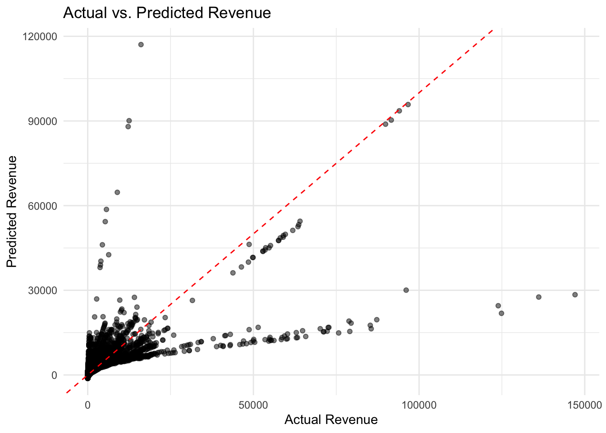
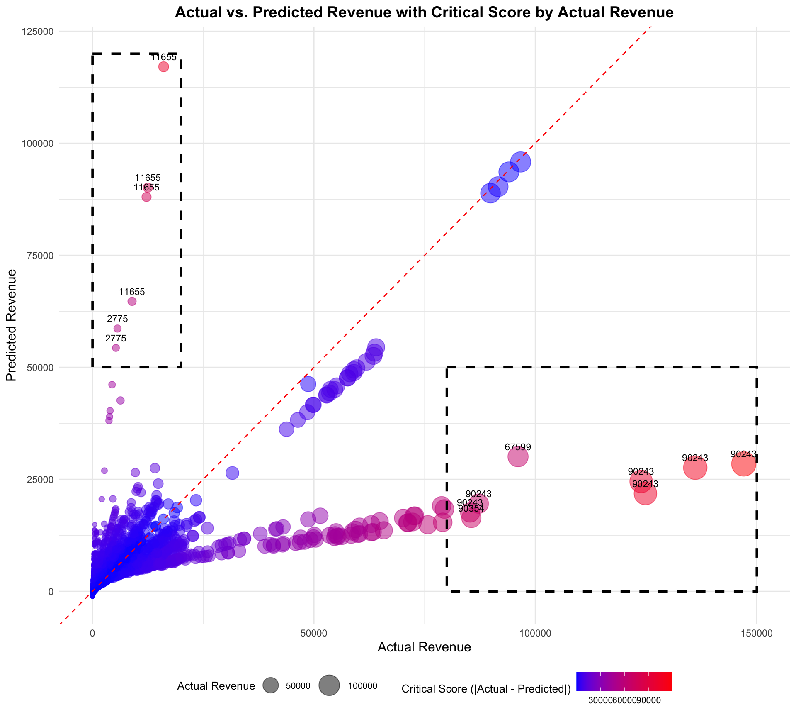

Question 3: How would you visually story tell the recommendations via a dashboard could you produce visual evidence or statistical evidence of your conclusions/recommendations?
Goal of the analysis: Narratively explain the entire analysis, illustrating how I concluded which areas and products to focus on, using visual and statistical evidence.
Summary of the Regression model
Based on our findings from questions 1 and 2, we have examined the quality of the data, created a regression model, and identified the key drivers of revenue by analyzing the p-values and coefficients to determine the most significant predictors.
# Show the regression modelsummary(model)
Call:
lm(formula = ordered_revenue_amount ~ ., data = data_train)
Residuals:
Min 1Q Median 3Q Max
-77579 -612 -189 396 118367
Coefficients: (2 not defined because of singularities)
Estimate Std. Error t value Pr(>|t|)
(Intercept) 5867.940130 14735.909116 0.398 0.6905
week_ending -0.364153 0.743986 -0.489 0.6245
asin 0.011511 0.001368 8.416 <0.0000000000000002 ***
ordered_units 20.675258 0.205555 100.583 <0.0000000000000002 ***
asp 31.373871 0.967078 32.442 <0.0000000000000002 ***
category.a 30.402476 106.148560 0.286 0.7746
category.b -3.528137 106.208459 -0.033 0.9735
category.c 180.248411 106.282564 1.696 0.0899 .
category.d NA NA NA NA
subcategory.aa -106.172324 118.636310 -0.895 0.3708
subcategory.bb 164.342191 118.622853 1.385 0.1660
subcategory.cc 5.252084 118.383693 0.044 0.9646
subcategory.dd -21.019948 118.537029 -0.177 0.8593
subcategory.ee NA NA NA NA
marketing_spend -0.034668 0.032283 -1.074 0.2829
views 0.079425 0.067711 1.173 0.2408
---
Signif. codes: 0 '***' 0.001 '**' 0.01 '*' 0.05 '.' 0.1 ' ' 1
Residual standard error: 4067 on 11762 degrees of freedom
Multiple R-squared: 0.485, Adjusted R-squared: 0.4845
F-statistic: 852.2 on 13 and 11762 DF, p-value: < 0.00000000000000022
From this model, we found that the most significant predictors of revenue are:
Number of units ordered (ordered_units): Coefficient = 20.67. This indicates that for each additional unit ordered, revenue increases by $20.67 (p-value < 0.00002).
Average selling price (asp): Coefficient = 31.37. This means that for each $1 increase in the average selling price, revenue increases by $31.37 (p-value < 0.00002).
Product identification number (asin): With a p-value of 0.00002, this predictor is also significant.
Although there are other predictors with high absolute coefficients, they are not as significant in terms of the p-value, indicating that they are not as reliable in this model.
Based on this rationale, I have made the following recommendations for actions to improve revenue:
Focus on Increasing Units Sold
Rationale: The number of units sold (ordered_units) is the most significant predictor of revenue, with a coefficient of 20.671226 and a very low p-value (< 0.0000000000000002). This strong positive relationship indicates that increasing the number of units sold will significantly boost revenue.
Action: Implement strategies to increase units sold, such as promotional campaigns, discounts for bulk purchases, and improved product availability. Enhance distribution channels to ensure products are always in stock and accessible to customers.
Optimize Average Selling Price (ASP)
Rationale: The average selling price (asp) also has a significant positive impact on revenue, with a coefficient of 31.411177 and a very low p-value (< 0.0000000000000002). Higher ASP contributes to higher revenue.
Action: Evaluate the pricing strategy to find an optimal balance that maximizes revenue without reducing demand. Consider value-based pricing, premium pricing for high-demand products, and periodic price adjustments based on market trends and competitor pricing.
Leverage Product Identification (ASIN)
Rationale: The asin variable, which represents product identification, has a significant positive coefficient of 0.011480 with a very low p-value (< 0.0000000000000002). This suggests that certain products inherently drive higher revenue.
Action: Identify and prioritize products with high revenue potential based on their ASINs. Focus marketing and promotional efforts on these high-performing products. Additionally, analyze characteristics of these high-revenue ASINs to replicate their success across other products.
Now that we have identified the key drivers according to the model, we have redesigned it using only the significant variables to enhance its strength.
# Show the refiend model that I created in the previous questionsummary(refined_model)
Call:
lm(formula = ordered_revenue_amount ~ asin + ordered_units +
asp, data = data_train)
Residuals:
Min 1Q Median 3Q Max
-77609 -597 -203 387 118636
Coefficients:
Estimate Std. Error t value Pr(>|t|)
(Intercept) -1306.511753 94.473524 -13.829 <0.0000000000000002 ***
asin 0.011480 0.001364 8.414 <0.0000000000000002 ***
ordered_units 20.671226 0.205513 100.584 <0.0000000000000002 ***
asp 31.411177 0.966556 32.498 <0.0000000000000002 ***
---
Signif. codes: 0 '***' 0.001 '**' 0.01 '*' 0.05 '.' 0.1 ' ' 1
Residual standard error: 4068 on 11772 degrees of freedom
Multiple R-squared: 0.4845, Adjusted R-squared: 0.4844
F-statistic: 3688 on 3 and 11772 DF, p-value: < 0.00000000000000022
We then added the predicted_revenue column to the dataset. With this, we can now categorize the areas that overperformed and underperformed according to the model’s predictions.
predicted_revenue_table
week_ending
asin
ordered_revenue_amount
ordered_units
asp
marketing_spend
views
predicted_revenue
19728
99345
1902.66
95
20.02800
3741
111
2426.7939
19728
91686
224.15
12
18.67917
2309
185
580.7918
19728
90798
437.74
9
48.63778
4781
253
1449.6195
19728
28305
4.95
1
4.95000
1643
1069
-805.4265
19728
52947
13.49
1
13.49000
3206
347
-254.2959
19728
40959
13064.52
597
21.88362
1292
323
12191.7913
19728
57942
612.19
34
18.00559
3432
1876
627.0348
19728
58053
602.36
44
13.69000
1284
408
699.4636
19728
60495
280.14
6
46.69000
3930
1156
978.5589
19728
59385
1816.13
69
26.32072
4519
1673
1628.2810
Then we moved on to the second question to dive deeper into which specific products to focus on. Before visualizing the data, I explained why we should focus on predicted revenue from the model instead of relying solely on actual sales data.
Benefits of Utilizing Model Prediction Data Instead of Relying on Actual Sales Data
Identify potential issues like stock shortages.
Optimize marketing strategies.
Adjust pricing to match market demand.
Improve product listings to enhance conversions.
Prepare for seasonal demand.
Estimate potential success for new product launches.
This approach is crucial for identifying potential issues like stock shortages, optimizing marketing strategies, adjusting pricing to match market demand, improving product listings to enhance conversions, preparing for seasonal demand, and estimating potential success for new product launches.
# Show the plot of Actual vs. Predicted Revenueplot_actual_vs_predicted_revenue

Looking at this plot, we were able to identify areas where actual revenue was higher or lower than predicted revenue. This information helps us focus on specific products that may require further analysis or action to improve sales performance.
To pinpoint the specific products that overperformed or underperformed, we set a threshold for the outliers in the plot. The identified products are shown in the visualization below.
# Show the plot of Actual vs. Predicted Revenue with Critical Score by Actual Revenueplot_actual_vs_predicted_revenue_critical

Next, we categorized the products into two focus areas based on the plot criteria:
Focus Area 1: Products with high predicted revenue but low actual revenue. These products likely have potential, but something may be missing to maximize their profit.
Focus Area 2: Products with low predicted revenue but high actual revenue. We need to investigate why these products are performing better than predicted. Understanding the reasons behind their success can help replicate it for other products or minimize risks in the future.
Based on the analysis of this dataset, we identified the key drivers by examining statistical indicators from the model, pinpointed products that are overperforming or underperforming, and segmented the products into two focus areas for further investigation. Using this approach, I recommend investing further in the following five products to maximize revenue by either boosting sales or preventing revenue decline.